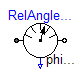
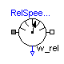
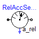
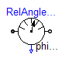
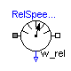
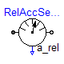
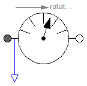
Measures the cut-torque between two flanges in an ideal way and provides the result as output signal outPort.signal[1] = flange_a.tau (to be further processed with blocks of the Modelica.Blocks library).
Release Notes:
model TorqueSensor
"Ideal sensor to measure the torque between two flanges (= flange_a.tau)"
extends Modelica.Icons.RotationalSensor;
SI.Torque tau
"Torque in flange flange_a and flange_b (= flange_a.tau = -flange_b.tau)";
Interfaces.Flange_a flange_a;
Interfaces.Flange_b flange_b;
Modelica.Blocks.Interfaces.OutPort outPort(final n=1);
equation
flange_a.phi = flange_b.phi;
flange_a.tau = tau;
flange_b.tau = -tau;
tau = outPort.signal[1];
end TorqueSensor;
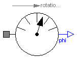
Measures the absolute angle phi of a flange in an ideal way and provides the result as output signal outPort.signal[1] (to be further processed with blocks of the Modelica.Blocks library).
Release Notes:
model AngleSensor "Ideal sensor to measure the absolute flange angle" extends Interfaces.AbsoluteSensor; SI.Angle phi "Absolute angle of flange"; equation phi = flange_a.phi; phi = outPort.signal[1]; 0 = flange_a.tau; end AngleSensor;
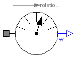
Measures the absolute angular velocity w of a flange in an ideal way and provides the result as output signal outPort.signal[1] (to be further processed with blocks of the Modelica.Blocks library).
Release Notes:
model SpeedSensor "Ideal sensor to measure the absolute flange angular velocity" extends Interfaces.AbsoluteSensor; SI.AngularVelocity w "Absolute angular velocity of flange"; equation w = der(flange_a.phi); w = outPort.signal[1]; 0 = flange_a.tau; end SpeedSensor;
Modelica.Mechanics.Rotational.Sensors.AccSensor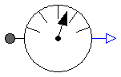
Measures the absolute angular acceleration a of a flange in an ideal way and provides the result as output signal (to be further processed with blocks of the Modelica.Blocks library).
Release Notes:
model AccSensor "Ideal sensor to measure the absolute flange angular acceleration" extends Interfaces.AbsoluteSensor; SI.AngularAcceleration a "Absolute angular acceleration of flange"; SI.AngularVelocity w "Absolute angular velocity of flange"; equation w = der(flange_a.phi); a = der(w); a = outPort.signal[1]; 0 = flange_a.tau; end AccSensor;
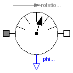
Measures the relative angle phi_rel between two flanges in an ideal way and provides the result as output signal outPort.signal[1] (to be further processed with blocks of the Modelica.Blocks library).
Release Notes:
model RelAngleSensor
"Ideal sensor to measure the relative angle between two flanges"
extends Interfaces.RelativeSensor;
SI.Angle phi_rel
"Relative angle between two flanges (= flange_b.phi - flange_a.phi)";
equation
phi_rel = flange_b.phi - flange_a.phi;
phi_rel = outPort.signal[1];
0 = flange_a.tau;
0 = flange_b.tau;
end RelAngleSensor;
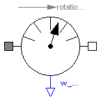
Measures the relative angular velocity w_rel between two flanges in an ideal way and provides the result as output signal outPort.signal[1] (to be further processed with blocks of the Modelica.Blocks library).
Release Notes:
model RelSpeedSensor
"Ideal sensor to measure the relative angular velocity between two flanges"
extends Interfaces.RelativeSensor;
SI.Angle phi_rel
"Relative angle between two flanges (flange_b.phi - flange_a.phi)";
SI.AngularVelocity w_rel "Relative angular velocity between two flanges";
equation
phi_rel = flange_b.phi - flange_a.phi;
w_rel = der(phi_rel);
w_rel = outPort.signal[1];
0 = flange_a.tau;
0 = flange_b.tau;
end RelSpeedSensor;
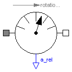
Measures the relative angular acceleration a_rel between two flanges in an ideal way and provides the result as output signal outPort.signal[1] (to be further processed with blocks of the Modelica.Blocks library).
Release Notes:
model RelAccSensor
"Ideal sensor to measure the relative angular acceleration between two flanges"
extends Interfaces.RelativeSensor;
SI.Angle phi_rel
"Relative angle between two flanges (flange_b.phi - flange_a.phi)";
SI.AngularVelocity w_rel "Relative angular velocity between two flanges";
SI.AngularAcceleration a_rel
"Relative angular aceleration between two flanges";
equation
phi_rel = flange_b.phi - flange_a.phi;
w_rel = der(phi_rel);
a_rel = der(w_rel);
a_rel = outPort.signal[1];
0 = flange_a.tau;
0 = flange_b.tau;
end RelAccSensor;